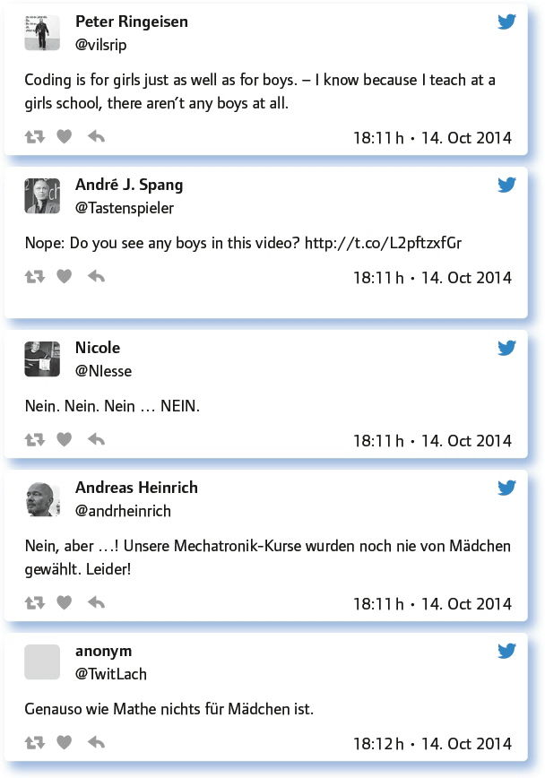
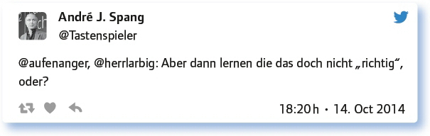

von André J. Spang
Dieser #EDchatDE ist eine Spezialausgabe innerhalb des Connected Educators Month 2014 in Kooperation mit der Initiative D21 und Microsoft in Berlin. Der #EDchatDE wurde an diesem Tag live mit einem Google Hangout On Air eröffnet (https://www.youtube.com/watch?v=LNia3qkIB0k). Hier ging es um Berichte aus der Praxis. Konkret erläuterten zwei meiner Schülerinnen aus der Oberstufe, wie sie sich spielerisch-probierend dem Thema Technik und Coding genähert und dann ihre eigenen Erfahrungen im Makerspace der schulnahen Stadtbibliothek in Köln an interessierte Bürger weitergegeben haben.
Coding als Teil des Schulunterrichtes wird immer mehr ein Diskussionsthema in den Medien. Hier ist es spannend, zu diskutieren, ob Coding tatsächlich so etwas wie eine vierte Kulturtechnik und damit so wichtig wie schreiben oder rechnen ist. Oder, ob es dann doch ein Thema für sogenannte Nerds ist – und schon gar nichts für Mädchen.
Ist Programmieren eine neue Kulturtechnik neben Lesen und Schreiben?
Die Meinungen sind hier kontrovers – klar wird jedoch, dass Programmieren wichtig ist und in die Schule gehört.
Wieso sollte Programmieren so etwas sein? Muss ich programmieren können, um Brot zu backen?
Ja, unbedingt. Ansonsten sind die aktuellen gesellschaftlichen Entwicklungen nicht zu verstehen.
Wäre auf jeden Fall ein überzeugendes Argument, um Programmieren in den Rahmenlehrplänen zu implementieren.
Ja. Und noch viel wichtiger ist es, Technologie konstruktiv zu nutzen: http://t.co/9R4NPRinUj
Irgendwie schon. Aber inwiefern genau? We will see.
Die Analogie ist mir zu stark. Kulturtechnik, ja. Neben Lesen und Schreiben, nein.
Ohne ein Verständnis der Informatik können wir unsere Welt nicht mehr verstehen, also Kulturtechnik: Ja!
Ganz klar: Programmieren ist für alle gut. Und Mädchen sollte man gar nicht erst einreden, dass sie es nicht können …

Kinder spielen manchmal schon mit 3 Jahren auf Smartphones. Ist das gefährlich oder ein Grund, ihnen Programmieren beizubringen?
Diese Frage ist provokativ – und genauso antworten die Chatter von #EDchatDE auch: Gute Argumente gegen „Kulturpessimisten“ …
Kommt drauf an, was und wie lange: Konzentrations- und Knobelspiele versus Ballerspiele.
Gefährlich ist die Nutzungsinkompetenz der Eltern/Lehrer und dass Kinder allein gelassen werden. Coding ab Grundschule!
Wie bei allen Sachen: anständig anleiten. Man kann mit Kindern auch kochen, auch Chemie-Experimente machen nach Anleitung.
Finde es schlimmer, wenn Kindern diese Möglichkeiten vorenthalten werden. Nicht Medium ist wichtig, sondern Inhalt.
Es gibt ja auch Gamification … Lieblingsbeispiele: Dragonbox Algebra 12+ und Dragonbox Elements.
Definitiv können Kinder spielerisch programmieren.
Wichtig ist die Begleitung durch Erwachsene und der kritische Umgang damit.
Auf Tablets/Smartphones gibt es tolle Programme für Kinder; dies ist sinnvolles programmieren.
Antworte auf 3 Tweets unterschiedlicher Teilgeberinnen a) zustimmend, b) kritisch, c) provozierend!

Schaffen wir das Fach Informatik ab und integrieren es fächerübergeifend?
Das sogenannte „Pflichtfach Informatik“ wird bei den Chattern von #EDchatDE kontrovers diskutiert. Man kann herauslesen, dass es sinnvoll ist, neben dem Fach Informatik in allen Fächern auf sich ändernde Lernkulturen und Kulturtechniken einzugehen.
Das ist ja schon einmal gescheitert, damals hieß es ITG und das Programmieren verschwand zunehmend.
Mediennutzung in allen Fächern ist höchste Priorität und sollte selbstverständlich sein plus IT als verbindliches Fach.
Das wird ausgehen wie die Abschaffung von Musik als Fach in der Grundschule in BW. Am Fach führt kein Weg vorbei. Schade.
Before we can abolish IT, *everybody* in the teaching staff ought to know about it. Only then integration might be an option.
Ein klares „Jein“. – Man sollte die Prinzipien verstanden haben. – Das ist wie Grammatik kennen und übertragbar auf viele Sprachen.
Eigentlich egal. Hauptsache wir forcieren das endlich flächendeckend. Nehmen wir uns die Länder zum Vorbild, die weiter sind.
Gegenfrage: Könnte man nicht auch Deutsch abschaffen, es ist ja in allen Fächern integriert …
Lehrplan ausdünnen: Kreativtät, Kollaboration, Kommunikation und kritisches Denken über/mit digitale(n) Medien sind heute zentral.
Informatik ist etwas für Nerds. Warum wird sich das (niemals) ändern?
Aktionen wie #codeweekEU oder #hourofcode können ein Anfang sein, dass Nerdimage zu ändern. Coding ist cool.
IT is going to remain a nerd subject as long as teachers; curriculums don’t make it clear that it’s not.
Man muss sich schon massiv reinfuchsen. Aber das muss man auch bei anderen Dingen. Wenn daraus gleich ein Nerdtum entsteht …
Vielleicht ist es eine Frage des Marketings, damit sich noch mehr fürs Programmieren begeistern? Anderes Wort dafür? Coding?
Stimmt meiner Meinung nach nicht. App-Inventor, Raspberry PI, Arduino sind längst keine Nischenprodukte mehr. Beispiel: http://t.co/uCS4dqxDVP
Weil angewandte (!) Informatik in den Medien (öffentl.-rechtl.) leider so eine geringe Rolle spielt.
Wenn sich an einer Schule mit 1000 SuS nur ein Lehrer für Wikis, Websites etc. interessiert, wird es schwierig.
(Wie) sollten Unternehmen Informatik an Schulen unterstützen? Oder wäre das sogar gefährlich?
Eine heikle Frage: Geht das denn? Sponsoring an Schulen? Und, wenn ja, dann wie? Und davon abgesehen, machen das ja einige Unternehmen schon …
Ich sehe das eher als staatliche Aufgabe.
Staatliche Aufgabe ja, aber Uni-Informatik kann gar keine Lehrer ausbilden. Die Abbruchquote liegt z. T. bei über 40 %. Es ist kein attraktives Fach.
Hardware stellen, gerne mit Aufkleber, Profis stellen, die den Schülern zeigen, dass das praktisch genutzt wird.
Sollen Schulen mit der technischen Infrastruktur ausgestattet werden, geht es nicht ohne Unternehmen.
Das tun sie doch längst, es scheint ja alles kostenlos zu sein.
Eltern und Lehrende sehen das oft sehr kritisch/skeptisch und das ist ok. Einflussnahme wäre schlecht.
So lange Unternehmen (z. B. Bundeswehr) Sport und Sozialkunde unterstützen, sollte das bei Info auch kein Problem sein.
Das kommt sehr auf die Profitabsichten des Unternehmens an. Am besten wären Stiftungen/Genossenschaften.
Wir wär’s mit Vorträgen aus der Praxis? Oder Praktikumsplätzen …?
Aktuelle Tipps zur Vernetzung unter Lehrenden, Wirtschaft und Politik?
Fazit:
Bei den sogenannten „Digitalthemen“ sind sich die #EDchatter meist einig. Es muss etwas geschehen in deutschen Klassenzimmern. Ob nun „Deutschland programmieren lernen muss“, darauf kann ein #EDchatDE keine abschließende Antwort, aber viele Impulse geben. Programmieren können hat auch etwas mit allgemeiner Problemlösekompetenz zu tun und ist demnach in einer vernetzten, digitalen Gesellschaft im 21. Jahrhundert per se eine sehr wichtige Kompetenz.
Link zum vollständigen Protokoll: